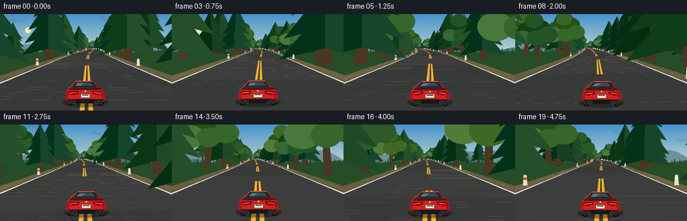
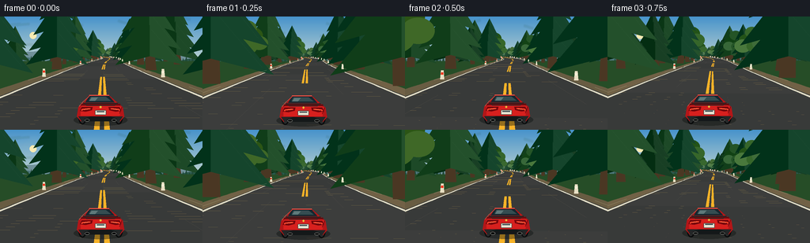

CODING AGENTS AS PIXEL WORLD MODELS
traex/GPT-5.6-Sol · instance_preservation_0029
点击播放 · 原生 RGB 像素
逐轮保存的候选
回放视频、检查图与代码变化。
每份候选均可单独播放。实际图片检查记录在下方工具轨迹中。
候选 01播放与检查图
点击播放 · 原生 RGB 像素

展开代码变化
--- 上一保存版本
+++ 本次保存版本
@@ -0,0 +1,383 @@
+from pathlib import Path
+import math
+import json
+import numpy as np
+from PIL import Image, ImageDraw, ImageFilter
+import artifact_io
+
+CASE_DIR = Path(__file__).resolve().parent
+SPEC = json.loads((CASE_DIR / 'task_spec.json').read_text())
+W, H = SPEC['width'], SPEC['height']
+N, FPS = SPEC['frames'], float(SPEC['fps'])
+SS = 3
+F = 122.0
+CAM_H = 2.0
+HORIZON = 49.5
+SPEED_PER_FRAME = 7.0 # 28 m/s at 4 fps: just over 100 km/h
+
+# A smooth, deterministic mountain road represented by its centerline in world space.
+DS = 0.25
+s_grid = np.arange(-80.0, 520.0 + DS, DS)
+heading_grid = (0.115 * np.sin(s_grid / 43.0 + 0.2)
+ + 0.055 * np.sin(s_grid / 19.0 - 0.8)
+ + 0.024 * np.sin(s_grid / 9.5 + 1.7))
+wx = np.zeros_like(s_grid)
+wy = np.zeros_like(s_grid)
+for i in range(1, len(s_grid)):
+ th = 0.5 * (heading_grid[i-1] + heading_grid[i])
+ wx[i] = wx[i-1] + math.sin(th) * DS
+ wy[i] = wy[i-1] + math.cos(th) * DS
+
+def road_at(s):
+ x = np.interp(s, s_grid, wx)
+ y = np.interp(s, s_grid, wy)
+ th = np.interp(s, s_grid, heading_grid)
+ return float(x), float(y), float(th)
+
+# Persistent trees: their world identities and appearances do not change between frames.
+rng = np.random.default_rng(240829)
+trees = []
+s = -35.0
+idx = 0
+while s < 480:
+ s += float(rng.uniform(5.0, 8.2))
+ for side in (-1, 1):
+ # Near roadside tree and, often, a second deeper row.
+ entries = [(float(rng.uniform(6.6, 10.0)), False)]
+ if rng.random() < 0.72:
+ entries.append((float(rng.uniform(12.0, 23.0)), True))
+ for off, deep in entries:
+ typ = 'pine' if rng.random() < (0.80 if deep else 0.68) else 'broad'
+ trees.append({
+ 'id': idx, 's': s + float(rng.uniform(-1.6, 1.6)),
+ 'side': side, 'off': off, 'deep': deep,
+ 'h': float(rng.uniform(8.5, 15.8) if typ == 'pine' else rng.uniform(7.0, 12.5)),
+ 'type': typ, 'tone': int(rng.integers(0, 4)),
+ 'lean': float(rng.uniform(-0.08, 0.08)),
+ })
+ idx += 1
+
+# Stable roadside reflector posts.
+posts = [(float(s), side) for s in np.arange(-20, 460, 13.0) for side in (-1, 1)]
+
+
+def sc(v): return int(round(v * SS))
+def pts(seq): return [(sc(x), sc(y)) for x, y in seq]
+def rect(box): return tuple(sc(v) for v in box)
+
+def world_point(s, lateral):
+ x, y, th = road_at(s)
+ # right-facing normal in the road plane
+ return x + math.cos(th) * lateral, y - math.sin(th) * lateral
+
+def camera_coords(world_xy, cam_s):
+ cx, cy, cth = road_at(cam_s)
+ dx, dy = world_xy[0] - cx, world_xy[1] - cy
+ lateral = dx * math.cos(cth) - dy * math.sin(cth)
+ forward = dx * math.sin(cth) + dy * math.cos(cth)
+ return lateral, forward
+
+def project_ground(world_xy, cam_s, horizon):
+ lat, z = camera_coords(world_xy, cam_s)
+ if z <= 0.12:
+ return None
+ return (W * 0.5 + F * lat / z, horizon + F * CAM_H / z, z)
+
+def road_proj(s, lateral, cam_s, horizon):
+ return project_ground(world_point(s, lateral), cam_s, horizon)
+
+
+def sky_and_mountains(frame_idx, cam_s, horizon):
+ hh, ww = H * SS, W * SS
+ a = np.zeros((hh, ww, 3), dtype=np.uint8)
+ # Clear high-altitude sky with a warm band near the horizon.
+ for yy in range(hh):
+ y = yy / SS
+ q = min(1.0, y / max(1.0, horizon + 18))
+ top = np.array([72, 147, 204.0])
+ low = np.array([205, 220, 210.0])
+ col = top * (1-q) + low * q
+ a[yy, :, :] = np.clip(col, 0, 255)
+ im = Image.fromarray(a, 'RGB')
+ d = ImageDraw.Draw(im)
+ cth = road_at(cam_s)[2]
+ shift = cth * 145.0
+
+ # Soft sun glow, positioned away from the car and road.
+ glow = Image.new('RGBA', im.size, (0,0,0,0))
+ gd = ImageDraw.Draw(glow)
+ sunx, suny = sc(42 - shift * 0.06), sc(24)
+ for rr in range(22, 2, -2):
+ alpha = int(2 + (22-rr) * 0.4)
+ gd.ellipse((sunx-sc(rr), suny-sc(rr), sunx+sc(rr), suny+sc(rr)), fill=(255,235,178,alpha))
+ gd.ellipse((sunx-sc(4.3), suny-sc(4.3), sunx+sc(4.3), suny+sc(4.3)), fill=(255,239,177,225))
+ im = Image.alpha_composite(im.convert('RGBA'), glow).convert('RGB')
+ d = ImageDraw.Draw(im)
+
+ # Distant layered ranges, generated analytically and shifted slightly with camera heading.
+ def ridge(base, amp1, amp2, phase, color):
+ p = []
+ for x in range(-8, W+9, 3):
+ xx = x + shift
+ y = base - amp1*math.sin(xx/29.0 + phase) - amp2*math.sin(xx/12.5 + phase*1.7)
+ # a few craggier peaks
+ y -= 2.4 * abs(math.sin(xx/18.0 + phase))
+ p.append((x, y))
+ p += [(W+9, horizon+20), (-8, horizon+20)]
+ d.polygon(pts(p), fill=color)
+ ridge(47, 8.0, 3.2, 1.2, (111, 145, 156))
+ ridge(53, 5.0, 3.0, 2.7, (77, 119, 124))
+ ridge(58, 4.2, 2.2, 4.1, (45, 91, 79))
+
+ # Snowlit facets on the most distant mountains.
+ peakx = (35 - shift) % 290 - 15
+ d.polygon(pts([(peakx-16,45),(peakx,31),(peakx+18,46),(peakx+5,40),(peakx,34),(peakx-4,42)]), fill=(185,201,196))
+ d.polygon(pts([(peakx,31),(peakx+18,46),(peakx+5,40)]), fill=(139,169,169))
+
+ # A fine distant conifer line grounds the road at the horizon.
+ for j in range(-4, 72):
+ x = j*4 + ((int(shift*0.25)) % 4)
+ ht = 5 + (j*17 % 7)
+ d.polygon(pts([(x,61),(x+2.3,61-ht),(x+4.6,61)]), fill=(36,76,62))
+ return im
+
+
+def draw_road(im, cam_s, horizon):
+ d = ImageDraw.Draw(im, 'RGBA')
+ # Ground base.
+ d.rectangle(rect((0, horizon+7, W, H)), fill=(41,79,43,255))
+
+ zvals = np.geomspace(185.0, 1.8, 86)
+ # Draw from horizon toward camera. Each segment is a world-fixed asphalt slab.
+ for zf, zn in zip(zvals[:-1], zvals[1:]):
+ sf, sn = cam_s + zf, cam_s + zn
+ # shoulders first, then road surface
+ sh = [road_proj(sf,-6.1,cam_s,horizon), road_proj(sf,6.1,cam_s,horizon),
+ road_proj(sn,6.1,cam_s,horizon), road_proj(sn,-6.1,cam_s,horizon)]
+ rd = [road_proj(sf,-5.0,cam_s,horizon), road_proj(sf,5.0,cam_s,horizon),
+ road_proj(sn,5.0,cam_s,horizon), road_proj(sn,-5.0,cam_s,horizon)]
+ if all(sh):
+ # earth shoulder alternates very subtly by fixed world position
+ band = int((cam_s + zn) // 7)
+ col = (111,99,73,255) if band % 2 else (103,94,70,255)
+ d.polygon(pts([(p[0],p[1]) for p in sh]), fill=col)
+ if all(rd):
+ band = int((cam_s + zn) // 9)
+ asphalt = (58,61,61,255) if band % 2 else (61,64,64,255)
+ d.polygon(pts([(p[0],p[1]) for p in rd]), fill=asphalt)
+
+ # Longitudinal edge lines as narrow world-space ribbons.
+ for side in (-1, 1):
+ for zf, zn in zip(zvals[:-1], zvals[1:]):
+ sf, sn = cam_s+zf, cam_s+zn
+ lat0, lat1 = side*4.72, side*4.91
+ q = [road_proj(sf,lat0,cam_s,horizon),road_proj(sf,lat1,cam_s,horizon),
+ road_proj(sn,lat1,cam_s,horizon),road_proj(sn,lat0,cam_s,horizon)]
+ if all(q): d.polygon(pts([(p[0],p[1]) for p in q]), fill=(230,231,211,235))
+
+ # Dashed double amber centerlines, fixed to road coordinates so they rush toward camera.
+ start = math.floor((cam_s-5)/12)*12
+ for seg_s in np.arange(start, cam_s+190, 12.0):
+ a, b = max(seg_s, cam_s+1.8), min(seg_s+7.0, cam_s+190)
+ if b <= a: continue
+ for offset in (-0.14, 0.14):
+ half = 0.075
+ q = [road_proj(b,offset-half,cam_s,horizon), road_proj(b,offset+half,cam_s,horizon),
+ road_proj(a,offset+half,cam_s,horizon), road_proj(a,offset-half,cam_s,horizon)]
+ if all(q): d.polygon(pts([(p[0],p[1]) for p in q]), fill=(244,182,43,245))
+
+ # Fine road wear and highlight streaks, also attached to world coordinates.
+ for lateral, phase in [(-2.1,1.0),(2.0,4.0),(-3.5,7.0),(3.25,10.0)]:
+ start = math.floor((cam_s-phase)/18)*18 + phase
+ for seg_s in np.arange(start, cam_s+110, 18):
+ a,b=max(seg_s,cam_s+2.0),min(seg_s+3.8,cam_s+110)
+ if b<=a: continue
+ pa=road_proj(a,lateral,cam_s,horizon); pb=road_proj(b,lateral,cam_s,horizon)
+ if pa and pb:
+ d.line(pts([(pa[0],pa[1]),(pb[0],pb[1])]), fill=(112,113,105,65), width=max(1,sc(0.28)))
+
+
+def tree_world(t):
+ return world_point(t['s'], t['side'] * t['off'])
+
+
+def draw_motion_streaks(im, visible, cam_s, prev_s, horizon):
+ ov = Image.new('RGBA', im.size, (0,0,0,0))
+ od = ImageDraw.Draw(ov, 'RGBA')
+ for t, p, hpx in visible:
+ if p[2] > 60 or hpx < 14: continue
+ pp = project_ground(tree_world(t), prev_s, horizon)
+ if not pp: continue
+ x,y,z=p; xp,yp,_=pp
+ # Faint foliage-colored radial streaks show rapid forward motion.
+ col = (34,83,51,28) if t['type']=='pine' else (54,102,48,25)
+ for frac, off in [(0.25,-0.18),(0.48,0.10),(0.72,0.0)]:
+ sx=x+(xp-x)*frac
+ sy=(y-hpx*0.45)+(yp-y)*frac
+ ex=xp
+ ey=(yp-hpx*0.45)
+ od.line(pts([(sx+off*hpx,sy),(ex+off*hpx,ey)]), fill=col, width=max(1,sc(min(3.2,hpx*0.08))))
+ # directional blur keeps streaks soft rather than painterly
+ ov = ov.filter(ImageFilter.GaussianBlur(sc(0.6)))
+ return Image.alpha_composite(im.convert('RGBA'), ov).convert('RGB')
+
+
+def draw_tree(d, t, p, hpx):
+ x, base, z = p
+ if hpx < 1.4: return
+ lean = t['lean'] * hpx
+ fade = min(1.0, max(0.0, (z-35)/145))
+ tones_pine = [(27,66,40),(32,75,43),(38,82,47),(25,71,48)]
+ tones_broad = [(46,91,43),(56,103,46),(39,86,42),(64,105,43)]
+ basecol = tones_pine[t['tone']] if t['type']=='pine' else tones_broad[t['tone']]
+ fog = np.array([88,126,107])
+ col = tuple(int(c*(1-0.55*fade)+fog[i]*(0.55*fade)) for i,c in enumerate(basecol))
+ dark = tuple(max(0,c-18) for c in col)
+ light = tuple(min(255,c+18) for c in col)
+ alpha = 255
+ trunkw = max(0.7, hpx*0.055)
+ trunk_top = base-hpx*0.63
+ d.polygon(pts([(x-trunkw,base),(x+trunkw,base),(x+lean+trunkw*.45,trunk_top),(x+lean-trunkw*.45,trunk_top)]), fill=(75,58,39,alpha))
+ if t['type']=='pine':
+ # Layered triangular boughs preserve recognizable individual tree shape.
+ for k,(cy,wr) in enumerate([(0.78,0.20),(0.61,0.27),(0.43,0.32),(0.27,0.35)]):
+ yy=base-hpx*cy
+ half=hpx*wr
+ tip=(x+lean*cy, yy-hpx*0.19)
+ left=(x+lean*cy-half, yy+hpx*0.22)
+ right=(x+lean*cy+half, yy+hpx*0.22)
+ d.polygon(pts([tip,left,(x+lean*cy,yy+hpx*0.13),right]), fill=dark+(alpha,))
+ d.polygon(pts([tip,(x+lean*cy,yy+hpx*0.13),right]), fill=col+(alpha,))
+ if hpx>34:
+ d.line(pts([(tip[0]+half*.05,tip[1]+hpx*.05),(right[0]-half*.18,right[1]-hpx*.04)]), fill=light+(100,), width=max(1,sc(0.45)))
+ else:
+ r=hpx*0.22
+ centers=[(-.18,.63),(.12,.70),(-.03,.84),(.25,.54),(-.28,.48),(.0,.47)]
+ for j,(ox,oy) in enumerate(centers):
+ rr=r*(0.82+0.08*((j+t['tone'])%3))
+ cx=x+lean*oy+ox*hpx
+ cy=base-oy*hpx
+ cc=dark if j<2 else (light if j==4 else col)
+ d.ellipse(rect((cx-rr,cy-rr*.8,cx+rr,cy+rr*.8)), fill=cc+(alpha,))
+
+
+def draw_posts(im, cam_s, horizon):
+ d=ImageDraw.Draw(im,'RGBA')
+ vis=[]
+ for ps,side in posts:
+ if not (cam_s+3 < ps < cam_s+115): continue
+ p=road_proj(ps,side*5.55,cam_s,horizon)
+ if p and -10<p[0]<W+10: vis.append((p[2],p,side))
+ for z,p,side in sorted(vis,reverse=True):
+ x,y,_=p; hp=max(1.4,F*0.75/z); wd=max(.45,hp*.22)
+ d.polygon(pts([(x-wd,y),(x+wd,y),(x+wd*.65,y-hp),(x-wd*.65,y-hp)]),fill=(224,221,197,255))
+ d.rectangle(rect((x-wd*.62,y-hp*.76,x+wd*.62,y-hp*.53)),fill=((228,58,35,255) if side<0 else (235,235,215,255)))
+
+
+def draw_car(im, frame_idx, cam_s):
+ # The same coupe is redrawn from a fixed parametric model in every frame.
+ d=ImageDraw.Draw(im,'RGBA')
+ curve = road_at(cam_s+25)[2]-road_at(cam_s)[2]
+ x = W/2 - curve*12 + 1.1*math.sin(frame_idx*0.58)
+ y = 132 + 0.55*math.sin(frame_idx*1.73)
+ skew = max(-1.6,min(1.6,-curve*15))
+
+ # Fast shadow and tire contact blur.
+ d.ellipse(rect((x-34,y-8,x+34,y+7)),fill=(16,19,18,105))
+ for side in (-1,1):
+ wx0=x+side*23
+ d.ellipse(rect((wx0-5,y-12,wx0+5,y+5)),fill=(13,15,16,255))
+ d.ellipse(rect((wx0-3.2,y-10.5,wx0+3.2,y+3.5)),fill=(43,46,47,255))
+
+ # Lower body and bumper.
+ body=[(x-30,y-5),(x-28,y-17),(x-20+skew*.3,y-24),(x-13+skew,y-32),
+ (x+12+skew,y-32),(x+20+skew*.3,y-24),(x+28,y-17),(x+30,y-5),
+ (x+25,y+1),(x-25,y+1)]
+ d.polygon(pts(body),fill=(174,26,28,255))
+ # Bright central paint plane, dark lower diffuser.
+ d.polygon(pts([(x-25,y-17),(x-19,y-23),(x+19,y-23),(x+26,y-17),(x+24,y-6),(x-25,y-6)]),fill=(207,36,34,255))
+ d.polygon(pts([(x-28,y-5),(x+28,y-5),(x+24,y+1),(x-24,y+1)]),fill=(39,42,43,255))
+ d.polygon(pts([(x-21,y-2),(x-13,y-5),(x+13,y-5),(x+21,y-2),(x+17,y+1),(x-17,y+1)]),fill=(24,28,29,255))
+
+ # Rear glass and roof remain stable identity anchors.
+ glass=[(x-13+skew,y-31),(x+12+skew,y-31),(x+18+skew*.25,y-23),(x-19+skew*.25,y-23)]
+ d.polygon(pts(glass),fill=(25,43,51,255))
+ d.polygon(pts([(x-11+skew,y-30),(x+8+skew,y-30),(x+13,y-25),(x-15,y-25)]),fill=(55,79,84,255))
+ d.polygon(pts([(x-10+skew,y-29),(x-2+skew,y-29),(x-7,y-25),(x-14,y-25)]),fill=(142,177,174,115))
+ d.line(pts([(x-13+skew,y-32),(x+12+skew,y-32)]),fill=(242,91,77,255),width=sc(1.0))
+
+ # Trunk lip/spoiler.
+ d.line(pts([(x-25,y-20),(x+25,y-20)]),fill=(102,18,22,255),width=sc(2.4))
+ d.line(pts([(x-22,y-22),(x+22,y-22)]),fill=(42,39,39,255),width=sc(1.5))
+ d.line(pts([(x-19,y-22),(x-18,y-19),(x+18,y-19),(x+19,y-22)]),fill=(48,42,41,255),width=sc(1))
+
+ # Signature boomerang tail lamps with a hot inner strip.
+ for side in (-1,1):
+ sx=x+side*18
+ lamp=[(sx-side*8,y-17),(sx+side*6,y-17),(sx+side*8,y-12),(sx+side*1,y-11),(sx-side*7,y-13)]
+ d.polygon(pts(lamp),fill=(116,10,16,255))
+ d.line(pts([(sx-side*5,y-15),(sx+side*5,y-14),(sx+side*6,y-12.5)]),fill=(255,77,51,255),width=sc(1.6))
+ d.line(pts([(sx-side*3,y-14.6),(sx+side*3,y-13.8)]),fill=(255,180,117,220),width=sc(.55))
+
+ # Plate, badge, exhausts, and body highlights.
+ d.rounded_rectangle(rect((x-7,y-13,x+7,y-7)),radius=sc(1),fill=(224,225,210,255),outline=(66,69,66,255),width=sc(.55))
+ d.rectangle(rect((x-4.7,y-11.7,x+4.7,y-10.7)),fill=(48,67,77,255))
+ d.ellipse(rect((x-1.25,y-18.2,x+1.25,y-15.7)),fill=(224,185,66,255))
+ for side in (-1,1):
+ ex=x+side*17
+ d.ellipse(rect((ex-3.1,y-2.0,ex+3.1,y+1.4)),fill=(10,12,13,255),outline=(115,119,116,255),width=sc(.65))
+ d.line(pts([(x-27,y-18),(x-22,y-24),(x-14,y-31)]),fill=(251,99,81,180),width=sc(.8))
+ d.line(pts([(x+27,y-17),(x+24,y-9)]),fill=(104,13,19,210),width=sc(1.0))
+
+
+def render_frame(i):
+ cam_s = 10.0 + i*SPEED_PER_FRAME
+ horizon = HORIZON + 0.45*math.sin(i*1.35)
+ im = sky_and_mountains(i,cam_s,horizon)
+ draw_road(im,cam_s,horizon)
+
+ # Determine and depth-sort persistent roadside trees.
+ visible=[]
+ for t in trees:
+ if not (cam_s+2.0 < t['s'] < cam_s+195): continue
+ p=project_ground(tree_world(t),cam_s,horizon)
+ if not p: continue
+ hpx=F*t['h']/p[2]
+ if -hpx < p[0] < W+hpx and p[1]-hpx < H+25:
+ visible.append((t,p,hpx))
+ visible.sort(key=lambda q:q[1][2],reverse=True)
+ im=draw_motion_streaks(im,visible,cam_s,cam_s-SPEED_PER_FRAME,horizon)
+ d=ImageDraw.Draw(im,'RGBA')
+ for t,p,hpx in visible:
+ draw_tree(d,t,p,hpx)
+
+ draw_posts(im,cam_s,horizon)
+
+ # Sparse speed glints along close shoulder edges.
+ d=ImageDraw.Draw(im,'RGBA')
+ for j in range(5):
+ z=4.2+j*3.5
+ side=-1 if (j+i)%2 else 1
+ a=road_proj(cam_s+z,side*(5.5+.5*(j%2)),cam_s,horizon)
+ b=road_proj(cam_s+z+2.0,side*(5.5+.5*(j%2)),cam_s,horizon)
+ if a and b:
+ d.line(pts([(a[0],a[1]),(b[0],b[1])]),fill=(214,211,172,80),width=sc(.65))
+
+ draw_car(im,i,cam_s)
+ # Gentle cinematic contrast; downsampling supplies clean antialiasing.
+ im=im.resize((W,H),Image.Resampling.LANCZOS).convert('RGB')
+ arr=np.asarray(im).astype(np.float32)
+ arr=(arr-128)*1.035+128
+ # mild warm sunlight grade
+ arr[:,:,0]*=1.025
+ arr[:,:,2]*=0.985
+ return np.clip(arr,0,255).astype(np.uint8)
+
+
+def main():
+ frames=np.stack([render_frame(i) for i in range(N)],axis=0)
+ artifact_io.save(frames,CASE_DIR)
+ print(f'saved {frames.shape[0]} RGB frames, {W}x{H}, at {FPS:g} fps')
+
+if __name__=='__main__':
+ main()
候选 02播放与检查图
点击播放 · 原生 RGB 像素


展开代码变化
--- 上一保存版本
+++ 本次保存版本
@@ -98,7 +98,7 @@
low = np.array([205, 220, 210.0])
col = top * (1-q) + low * q
a[yy, :, :] = np.clip(col, 0, 255)
- im = Image.fromarray(a, 'RGB')
+ im = Image.fromarray(a)
d = ImageDraw.Draw(im)
cth = road_at(cam_s)[2]
shift = cth * 145.0
可观测工具轨迹
实际执行的命令与返回图片。
命令 1exit 0
/bin/bash -lc "cat prompt.txt && printf '\\n--- GENERATION_RULES.md ---\\n' && cat GENERATION_RULES.md"
命令 2exit 0
/bin/bash -lc "cat task_spec.json && printf '\\n--- FILES ---\\n' && find . -maxdepth 2 -type f -printf '%p\\n' | sort"
命令 3exit 0
/bin/bash -lc "command -v ffmpeg || true; command -v convert || true; command -v magick || true; command -v blender || true; python3 - <<'PY' mods=['numpy','PIL','cv2','imageio','scipy','cairo','skimage'] for m in mods: try: x=__import__(m); print(m, getattr(x,'__version__','ok')) except Exception as e: print(m,'NO',type(e).__name__) PY"
命令 4exit 0
/bin/bash -lc "sed -n '1,260p' artifact_io.py"
命令 5exit 0
/bin/bash -lc "cat > generate.py <<'PY'
from pathlib import Path
import math
import json
import numpy as np
from PIL import Image, ImageDraw, ImageFilter
import artifact_io
CASE_DIR = Path(__file__).resolve().parent
SPEC = json.loads((CASE_DIR / 'task_spec.json').read_text())
W, H = SPEC['width'], SPEC['height']
N, FPS = SPEC['frames'], float(SPEC['fps'])
SS = 3
F = 122.0
CAM_H = 2.0
HORIZON = 49.5
SPEED_PER_FRAME = 7.0 # 28 m/s at 4 fps: just over 100 km/h
# A smooth, deterministic mountain road represented by its centerline in world space.
DS = 0.25
s_grid = np.arange(-80.0, 520.0 + DS, DS)
heading_grid = (0.115 * np.sin(s_grid / 43.0 + 0.2)
+ 0.055 * np.sin(s_grid / 19.0 - 0.8)
+ 0.024 * np.sin(s_grid / 9.5 + 1.7))
wx = np.zeros_like(s_grid)
wy = np.zeros_like(s_grid)
for i in range(1, len(s_grid)):
th = 0.5 * (heading_grid[i-1] + heading_grid[i])
wx[i] = wx[i-1] + math.sin(th) * DS
wy[i] = wy[i-1] + math.cos(th) * DS
def road_at(s):
x = np.interp(s, s_grid, wx)
y = np.interp(s, s_grid, wy)
th = np.interp(s, s_grid, heading_grid)
return float(x), float(y), float(th)
# Persistent trees: their world identities and appearances do not change between frames.
rng = np.random.default_rng(240829)
trees = []
s = -35.0
idx = 0
while s < 480:
s += float(rng.uniform(5.0, 8.2))
for side in (-1, 1):
# Near roadside tree and, often, a second deeper row.
entries = [(float(rng.uniform(6.6, 10.0)), False)]
if rng.random() < 0.72:
entries.append((float(rng.uniform(12.0, 23.0)), True))
for off, deep in entries:
typ = 'pine' if rng.random() < (0.80 if deep else 0.68) else 'broad'
trees.append({
'id': idx, 's': s + float(rng.uniform(-1.6, 1.6)),
'side': side, 'off': off, 'deep': deep,
'h': float(rng.uniform(8.5, 15.8) if typ == 'pine' else rng.uniform(7.0, 12.5)),
'type': typ, 'tone': int(rng.integers(0, 4)),
'lean': float(rng.uniform(-0.08, 0.08)),
})
idx += 1
# Stable roadside reflector posts.
posts = [(float(s), side) for s in np.arange(-20, 460, 13.0) for side in (-1, 1)]
def sc(v): return int(round(v * SS))
def pts(seq): return [(sc(x), sc(y)) for x, y in seq]
def rect(box): return tuple(sc(v) for v in box)
def world_point(s, lateral):
x, y, th = road_at(s)
# right-facing normal in the road plane
return x + math.cos(th) * lateral, y - math.sin(th) * lateral
def camera_coords(world_xy, cam_s):
cx, cy, cth = road_at(cam_s)
dx, dy = world_xy[0] - cx, world_xy[1] - cy
lateral = dx * math.cos(cth) - dy * math.sin(cth)
forward = dx * math.sin(cth) + dy * math.cos(cth)
return lateral, forward
def project_ground(world_xy, cam_s, horizon):
lat, z = camera_coords(world_xy, cam_s)
if z <= 0.12:
return None
return (W * 0.5 + F * lat / z, horizon + F * CAM_H / z, z)
def road_proj(s, lateral, cam_s, horizon):
return project_ground(world_point(s, lateral), cam_s, horizon)
def sky_and_mountains(frame_idx, cam_s, horizon):
hh, ww = H * SS, W * SS
a = np.zeros((hh, ww, 3), dtype=np.uint8)
# Clear high-altitude sky with a warm band near the horizon.
for yy in range(hh):
y = yy / SS
q = min(1.0, y / max(1.0, horizon + 18))
top = np.array([72, 147, 204.0])
low = np.array([205, 220, 210.0])
col = top * (1-q) + low * q
a[yy, :, :] = np.clip(col, 0, 255)
im = Image.fromarray(a, 'RGB')
d = ImageDraw.Draw(im)
cth = road_at(cam_s)[2]
shift = cth * 145.0
# Soft sun glow, positioned away from the car and road.
glow = Image.new('RGBA', im.size, (0,0,0,0))
gd = ImageDraw.Draw(glow)
sunx, suny = sc(42 - shift * 0.06), sc(24)
for rr in range(22, 2, -2):
alpha = int(2 + (22-rr) * 0.4)
gd.ellipse((sunx-sc(rr), suny-sc(rr), sunx+sc(rr), suny+sc(rr)), fill=(255,235,178,alpha))
gd.ellipse((sunx-sc(4.3), suny-sc(4.3), sunx+sc(4.3), suny+sc(4.3)), fill=(255,239,177,225))
im = Image.alpha_composite(im.convert('RGBA'), glow).convert('RGB')
d = ImageDraw.Draw(im)
# Distant layered ranges, generated analytically and shifted slightly with camera heading.
def ridge(base, amp1, amp2, phase, color):
p = []
for x in range(-8, W+9, 3):
xx = x + shift
y = base - amp1*math.sin(xx/29.0 + phase) - amp2*math.sin(xx/12.5 + phase*1.7)
# a few craggier peaks
y -= 2.4 * abs(math.sin(xx/18.0 + phase))
p.append((x, y))
p += [(W+9, horizon+20), (-8, horizon+20)]
d.polygon(pts(p), fill=color)
ridge(47, 8.0, 3.2, 1.2, (111, 145, 156))
ridge(53, 5.0, 3.0, 2.7, (77, 119, 124))
ridge(58, 4.2, 2.2, 4.1, (45, 91, 79))
# Snowlit facets on the most distant mountains.
peakx = (35 - shift) % 290 - 15
d.polygon(pts([(peakx-16,45),(peakx,31),(peakx+18,46),(peakx+5,40),(peakx,34),(peakx-4,42)]), fill=(185,201,196))
d.polygon(pts([(peakx,31),(peakx+18,46),(peakx+5,40)]), fill=(139,169,169))
# A fine distant conifer line grounds the road at the horizon.
for j in range(-4, 72):
x = j*4 + ((int(shift*0.25)) % 4)
ht = 5 + (j*17 % 7)
d.polygon(pts([(x,61),(x+2.3,61-ht),(x+4.6,61)]), fill=(36,76,62))
return im
def draw_road(im, cam_s, horizon):
d = ImageDraw.Draw(im, 'RGBA')
# Ground base.
d.rectangle(rect((0, horizon+7, W, H)), fill=(41,79,43,255))
zvals = np.geomspace(185.0, 1.8, 86)
# Draw from horizon toward camera. Each segment is a world-fixed asphalt slab.
for zf, zn in zip(zvals[:-1], zvals[1:]):
sf, sn = cam_s + zf, cam_s + zn
# shoulders first, then road surface
sh = [road_proj(sf,-6.1,cam_s,horizon), road_proj(sf,6.1,cam_s,horizon),
road_proj(sn,6.1,cam_s,horizon), road_proj(sn,-6.1,cam_s,horizon)]
rd = [road_proj(sf,-5.0,cam_s,horizon), road_proj(sf,5.0,cam_s,horizon),
road_proj(sn,5.0,cam_s,horizon), road_proj(sn,-5.0,cam_s,horizon)]
if all(sh):
# earth shoulder alternates very subtly by fixed world position
band = int((cam_s + zn) // 7)
col = (111,99,73,255) if band % 2 else (103,94,70,255)
d.polygon(pts([(p[0],p[1]) for p in sh]), fill=col)
if all(rd):
band = int((cam_s + zn) // 9)
asphalt = (58,61,61,255) if band % 2 else (61,64,64,255)
d.polygon(pts([(p[0],p[1]) for p in rd]), fill=asphalt)
# Longitudinal edge lines as narrow world-space ribbons.
for side in (-1, 1):
for zf, zn in zip(zvals[:-1], zvals[1:]):
sf, sn = cam_s+zf, cam_s+zn
lat0, lat1 = side*4.72, side*4.91
q = [road_proj(sf,lat0,cam_s,horizon),road_proj(sf,lat1,cam_s,horizon),
road_proj(sn,lat1,cam_s,horizon),road_proj(sn,lat0,cam_s,horizon)]
if all(q): d.polygon(pts([(p[0],p[1]) for p in q]), fill=(230,231,211,235))
# Dashed double amber centerlines, fixed to road coordinates so they rush toward camera.
start = math.floor((cam_s-5)/12)*12
for seg_s in np.arange(start, cam_s+190, 12.0):
a, b = max(seg_s, cam_s+1.8), min(seg_s+7.0, cam_s+190)
if b <= a: continue
for offset in (-0.14, 0.14):
half = 0.075
q = [road_proj(b,offset-half,cam_s,horizon), road_proj(b,offset+half,cam_s,horizon),
road_proj(a,offset+half,cam_s,horizon), road_proj(a,offset-half,cam_s,horizon)]
if all(q): d.polygon(pts([(p[0],p[1]) for p in q]), fill=(244,182,43,245))
# Fine road wear and highlight streaks, also attached to world coordinates.
for lateral, phase in [(-2.1,1.0),(2.0,4.0),(-3.5,7.0),(3.25,10.0)]:
start = math.floor((cam_s-phase)/18)*18 + phase
for seg_s in np.arange(start, cam_s+110, 18):
a,b=max(seg_s,cam_s+2.0),min(seg_s+3.8,cam_s+110)
if b<=a: continue
pa=road_proj(a,lateral,cam_s,horizon); pb=road_proj(b,lateral,cam_s,horizon)
if pa and pb:
d.line(pts([(pa[0],pa[1]),(pb[0],pb[1])]), fill=(112,113,105,65), width=max(1,sc(0.28)))
def tree_world(t):
return world_point(t['s'], t['side'] * t['off'])
def draw_motion_streaks(im, visible, cam_s, prev_s, horizon):
ov = Image.new('RGBA', im.size, (0,0,0,0))
od = ImageDraw.Draw(ov, 'RGBA')
for t, p, hpx in visible:
if p[2] > 60 or hpx < 14: continue
pp = project_ground(tree_world(t), prev_s, horizon)
if not pp: continue
x,y,z=p; xp,yp,_=pp
# Faint foliage-colored radial streaks show rapid forward motion.
col = (34,83,51,28) if t['type']=='pine' else (54,102,48,25)
for frac, off in [(0.25,-0.18),(0.48,0.10),(0.72,0.0)]:
sx=x+(xp-x)*frac
sy=(y-hpx*0.45)+(yp-y)*frac
ex=xp
ey=(yp-hpx*0.45)
od.line(pts([(sx+off*hpx,sy),(ex+off*hpx,ey)]), fill=col, width=max(1,sc(min(3.2,hpx*0.08))))
# directional blur keeps streaks soft rather than painterly
ov = ov.filter(ImageFilter.GaussianBlur(sc(0.6)))
return Image.alpha_composite(im.convert('RGBA'), ov).convert('RGB')
def draw_tree(d, t, p, hpx):
x, base, z = p
if hpx < 1.4: return
lean = t['lean'] * hpx
fade = min(1.0, max(0.0, (z-35)/145))
tones_pine = [(27,66,40),(32,75,43),(38,82,47),(25,71,48)]
tones_broad = [(46,91,43),(56,103,46),(39,86,42),(64,105,43)]
basecol = tones_pine[t['tone']] if t['type']=='pine' else tones_broad[t['tone']]
fog = np.array([88,126,107])
col = tuple(int(c*(1-0.55*fade)+fog[i]*(0.55*fade)) for i,c in enumerate(basecol))
dark = tuple(max(0,c-18) for c in col)
light = tuple(min(255,c+18) for c in col)
alpha = 255
trunkw = max(0.7, hpx*0.055)
trunk_top = base-hpx*0.63
d.polygon(pts([(x-trunkw,base),(x+trunkw,base),(x+lean+trunkw*.45,trunk_top),(x+lean-trunkw*.45,trunk_top)]), fill=(75,58,39,alpha))
if t['type']=='pine':
# Layered triangular boughs preserve recognizable individual tree shape.
for k,(cy,wr) in enumerate([(0.78,0.20),(0.61,0.27),(0.43,0.32),(0.27,0.35)]):
yy=base-hpx*cy
half=hpx*wr
tip=(x+lean*cy, yy-hpx*0.19)
left=(x+lean*cy-half, yy+hpx*0.22)
right=(x+lean*cy+half, yy+hpx*0.22)
d.polygon(pts([tip,left,(x+lean*cy,yy+hpx*0.13),right]), fill=dark+(alpha,))
d.polygon(pts([tip,(x+lean*cy,yy+hpx*0.13),right]), fill=col+(alpha,))
if hpx>34:
d.line(pts([(tip[0]+half*.05,tip[1]+hpx*.05),(right[0]-half*.18,right[1]-hpx*.04)]), fill=light+(100,), width=max(1,sc(0.45)))
else:
r=hpx*0.22
centers=[(-.18,.63),(.12,.70),(-.03,.84),(.25,.54),(-.28,.48),(.0,.47)]
for j,(ox,oy) in enumerate(centers):
rr=r*(0.82+0.08*((j+t['tone'])%3))
cx=x+lean*oy+ox*hpx
cy=base-oy*hpx
cc=dark if j<2 else (light if j==4 else col)
d.ellipse(rect((cx-rr,cy-rr*.8,cx+rr,cy+rr*.8)), fill=cc+(alpha,))
def draw_posts(im, cam_s, horizon):
d=ImageDraw.Draw(im,'RGBA')
vis=[]
for ps,side in posts:
if not (cam_s+3 < ps < cam_s+115): continue
p=road_proj(ps,side*5.55,cam_s,horizon)
if p and -10<p[0]<W+10: vis.append((p[2],p,side))
for z,p,side in sorted(vis,reverse=True):
x,y,_=p; hp=max(1.4,F*0.75/z); wd=max(.45,hp*.22)
d.polygon(pts([(x-wd,y),(x+wd,y),(x+wd*.65,y-hp),(x-wd*.65,y-hp)]),fill=(224,221,197,255))
d.rectangle(rect((x-wd*.62,y-hp*.76,x+wd*.62,y-hp*.53)),fill=((228,58,35,255) if side<0 else (235,235,215,255)))
def draw_car(im, frame_idx, cam_s):
# The same coupe is redrawn from a fixed parametric model in every frame.
d=ImageDraw.Draw(im,'RGBA')
curve = road_at(cam_s+25)[2]-road_at(cam_s)[2]
x = W/2 - curve*12 + 1.1*math.sin(frame_idx*0.58)
y = 132 + 0.55*math.sin(frame_idx*1.73)
skew = max(-1.6,min(1.6,-curve*15))
# Fast shadow and tire contact blur.
d.ellipse(rect((x-34,y-8,x+34,y+7)),fill=(16,19,18,105))
for side in (-1,1):
wx0=x+side*23
d.ellipse(rect((wx0-5,y-12,wx0+5,y+5)),fill=(13,15,16,255))
d.ellipse(rect((wx0-3.2,y-10.5,wx0+3.2,y+3.5)),fill=(43,46,47,255))
# Lower body and bumper.
body=[(x-30,y-5),(x-28,y-17),(x-20+skew*.3,y-24),(x-13+skew,y-32),
(x+12+skew,y-32),(x+20+skew*.3,y-24),(x+28,y-17),(x+30,y-5),
(x+25,y+1),(x-25,y+1)]
d.polygon(pts(body),fill=(174,26,28,255))
# Bright central paint plane, dark lower diffuser.
d.polygon(pts([(x-25,y-17),(x-19,y-23),(x+19,y-23),(x+26,y-17),(x+24,y-6),(x-25,y-6)]),fill=(207,36,34,255))
d.polygon(pts([(x-28,y-5),(x+28,y-5),(x+24,y+1),(x-24,y+1)]),fill=(39,42,43,255))
d.polygon(pts([(x-21,y-2),(x-13,y-5),(x+13,y-5),(x+21,y-2),(x+17,y+1),(x-17,y+1)]),fill=(24,28,29,255))
# Rear glass and roof remain stable identity anchors.
glass=[(x-13+skew,y-31),(x+12+skew,y-31),(x+18+skew*.25,y-23),(x-19+skew*.25,y-23)]
d.polygon(pts(glass),fill=(25,43,51,255))
d.polygon(pts([(x-11+skew,y-30),(x+8+skew,y-30),(x+13,y-25),(x-15,y-25)]),fill=(55,79,84,255))
d.polygon(pts([(x-10+skew,y-29),(x-2+skew,y-29),(x-7,y-25),(x-14,y-25)]),fill=(142,177,174,115))
d.line(pts([(x-13+skew,y-32),(x+12+skew,y-32)]),fill=(242,91,77,255),width=sc(1.0))
# Trunk lip/spoiler.
d.line(pts([(x-25,y-20),(x+25,y-20)]),fill=(102,18,22,255),width=sc(2.4))
d.line(pts([(x-22,y-22),(x+22,y-22)]),fill=(42,39,39,255),width=sc(1.5))
d.line(pts([(x-19,y-22),(x-18,y-19),(x+18,y-19),(x+19,y-22)]),fill=(48,42,41,255),width=sc(1))
# Signature boomerang tail lamps with a hot inner strip.
for side in (-1,1):
sx=x+side*18
lamp=[(sx-side*8,y-17),(sx+side*6,y-17),(sx+side*8,y-12),(sx+side*1,y-11),(sx-side*7,y-13)]
d.polygon(pts(lamp),fill=(116,10,16,255))
d.line(pts([(sx-side*5,y-15),(sx+side*5,y-14),(sx+side*6,y-12.5)]),fill=(255,77,51,255),width=sc(1.6))
d.line(pts([(sx-side*3,y-14.6),(sx+side*3,y-13.8)]),fill=(255,180,117,220),width=sc(.55))
# Plate, badge, exhausts, and body highlights.
d.rounded_rectangle(rect((x-7,y-13,x+7,y-7)),radius=sc(1),fill=(224,225,210,255),outline=(66,69,66,255),width=sc(.55))
d.rectangle(rect((x-4.7,y-11.7,x+4.7,y-10.7)),fill=(48,67,77,255))
d.ellipse(rect((x-1.25,y-18.2,x+1.25,y-15.7)),fill=(224,185,66,255))
for side in (-1,1):
ex=x+side*17
d.ellipse(rect((ex-3.1,y-2.0,ex+3.1,y+1.4)),fill=(10,12,13,255),outline=(115,119,116,255),width=sc(.65))
d.line(pts([(x-27,y-18),(x-22,y-24),(x-14,y-31)]),fill=(251,99,81,180),width=sc(.8))
d.line(pts([(x+27,y-17),(x+24,y-9)]),fill=(104,13,19,210),width=sc(1.0))
def render_frame(i):
cam_s = 10.0 + i*SPEED_PER_FRAME
horizon = HORIZON + 0.45*math.sin(i*1.35)
im = sky_and_mountains(i,cam_s,horizon)
draw_road(im,cam_s,horizon)
# Determine and depth-sort persistent roadside trees.
visible=[]
for t in trees:
if not (cam_s+2.0 < t['s'] < cam_s+195): continue
p=project_ground(tree_world(t),cam_s,horizon)
if not p: continue
hpx=F*t['h']/p[2]
if -hpx < p[0] < W+hpx and p[1]-hpx < H+25:
visible.append((t,p,hpx))
visible.sort(key=lambda q:q[1][2],reverse=True)
im=draw_motion_streaks(im,visible,cam_s,cam_s-SPEED_PER_FRAME,horizon)
d=ImageDraw.Draw(im,'RGBA')
for t,p,hpx in visible:
draw_tree(d,t,p,hpx)
draw_posts(im,cam_s,horizon)
# Sparse speed glints along close shoulder edges.
d=ImageDraw.Draw(im,'RGBA')
for j in range(5):
z=4.2+j*3.5
side=-1 if (j+i)%2 else 1
a=road_proj(cam_s+z,side*(5.5+.5*(j%2)),cam_s,horizon)
b=road_proj(cam_s+z+2.0,side*(5.5+.5*(j%2)),cam_s,horizon)
if a and b:
d.line(pts([(a[0],a[1]),(b[0],b[1])]),fill=(214,211,172,80),width=sc(.65))
draw_car(im,i,cam_s)
# Gentle cinematic contrast; downsampling supplies clean antialiasing.
im=im.resize((W,H),Image.Resampling.LANCZOS).convert('RGB')
arr=np.asarray(im).astype(np.float32)
arr=(arr-128)*1.035+128
# mild warm sunlight grade
arr[:,:,0]*=1.025
arr[:,:,2]*=0.985
return np.clip(arr,0,255).astype(np.uint8)
def main():
frames=np.stack([render_frame(i) for i in range(N)],axis=0)
artifact_io.save(frames,CASE_DIR)
print(f'saved {frames.shape[0]} RGB frames, {W}x{H}, at {FPS:g} fps')
if __name__=='__main__':
main()
PY
python3 generate.py
ls -lh pixels.npz inspection.png transition_check.png index.html frames/00.png frames/19.png"命令 6exit 0
/bin/bash -lc "python3 - <<'PY'
import numpy as np
from PIL import Image
from pathlib import Path
fs=np.stack([np.array(Image.open(p).convert('RGB')) for p in sorted(Path('frames').glob('*.png'))])
print('shape/dtype',fs.shape,fs.dtype)
print('RGB min/max/mean',fs.min((0,1,2)),fs.max((0,1,2)),fs.mean((0,1,2)).round(2))
d=np.abs(np.diff(fs.astype(np.int16),axis=0))
print('frame MAE each',np.mean(d,axis=(1,2,3)).round(2).tolist())
print('changed pixel frac',np.mean(np.any(d>2,axis=3),axis=(1,2)).round(3).tolist())
# Car region consistency, sky stability, roadside speed
for name,sl in [('sky',(slice(0,42),slice(None))),('road',(slice(65,110),slice(70,186))),('car',(slice(98,143),slice(90,166))),('sides',(slice(55,144),slice(None)))]:
y,x=sl; z=np.abs(np.diff(fs[:,y,x].astype(np.int16),axis=0))
print(name,'temporal MAE',float(z.mean()))
print('all unique frames',len({f.tobytes() for f in fs}))
PY"命令 7exit 0
/bin/bash -lc 'for x in chafa viu img2txt jp2; do command -v $x && echo $x; done || true
python3 -m py_compile generate.py
python3 - <<'"'PY'
import numpy as np
z=np.load('pixels.npz')['pixels']
print('pixels archive',z.shape,z.dtype,hex(int(z.min())),hex(int(z.max())))
PY"命令 8exit 0
/bin/bash -lc "python3 - <<'PY' import generate as g for i in [0,5,10,15,19]: s=10+i*g.SPEED_PER_FRAME vals=[] for z in [10,20,35,55,80,120,170]: p=g.road_proj(s+z,0,s,g.HORIZON) vals.append(round(p[0],1) if p else None) print(i,vals,'bend span',round(max(vals)-min(vals),1)) PY"
命令 9exit 0
/bin/bash -lc "python3 generate.py && python3 - <<'PY'
from pathlib import Path
import json, numpy as np
from PIL import Image
spec=json.loads(Path('task_spec.json').read_text())
files=sorted(Path('frames').glob('*.png'))
assert len(files)==spec['frames']==20
frames=np.stack([np.asarray(Image.open(p).convert('RGB')) for p in files])
assert frames.shape==(20,144,256,3) and frames.dtype==np.uint8
z=np.load('pixels.npz')['pixels']
assert z.shape==(144,256,20) and z.dtype==np.uint32
for f in ['pixels.npz','index.html','inspection.png','transition_check.png','generate.py']:
assert Path(f).is_file() and Path(f).stat().st_size>0
print('FINAL_OK',frames.shape,frames.dtype,'archive',z.shape,'outputs',len(files))
PY
git status --short 2>/dev/null || true"保存候选 2 份；完成命令 9 次；可验证图片返回 0 张。原始 API 响应与完整日志保留在本地。